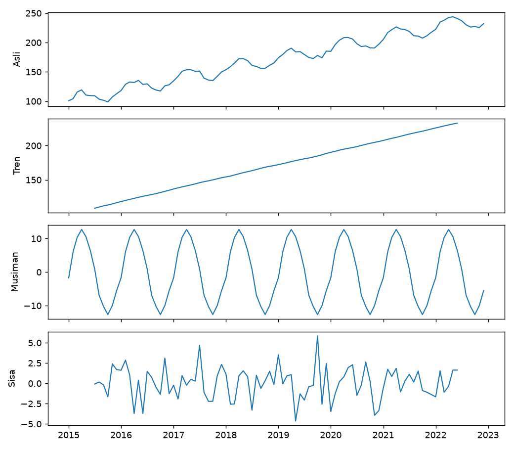

Dasar Deret Waktu: Tren, Musiman, dan Derau¶
Tujuan pembelajaran¶
- Menjelaskan apa yang membuat data deret waktu berbeda dari data tabular biasa.
- Mengenali komponen tren, musiman (seasonality), dan derau (noise).
- Membedakan model aditif dan multiplikatif, serta membaca dekomposisi.
- Memahami autokorelasi dan diferensiasi.
Apa yang berbeda?¶
Deret waktu adalah pengamatan yang diurutkan menurut waktu pada selang yang teratur (harian, bulanan, ...). Tujuan forecasting adalah memprediksi nilai di masa depan dari nilai masa lalu. Konsekuensinya:
- Urutan adalah informasi. Mengacak data menghancurkannya, dan memakai data masa depan untuk memprediksi masa lalu menciptakan kebocoran.
- Pengamatan saling bergantung (autokorelasi), padahal banyak metode tabular mengasumsikan sampel independen.
- Evaluasi harus kronologis (dibahas di lesson validasi).
Komponen deret waktu¶
| Komponen | Arti |
|---|---|
| Indeks waktu | Penanda waktu tiap pengamatan, dengan frekuensi tetap (MS = awal bulan) |
| Tren (trend) | Arah jangka panjang naik atau turun |
| Musiman (seasonality) | Pola berulang pada periode tetap (misalnya 12 bulan) |
| Derau (noise, sisa) | Variasi acak yang tidak dapat dijelaskan |
Model aditif menjumlahkan komponen; model multiplikatif mengalikannya (cocok bila amplitudo musiman membesar mengikuti tren):
\(y_t\) nilai pada waktu \(t\), \(T_t\) tren, \(S_t\) komponen musiman, dan \(\varepsilon_t\) derau.
Autokorelasi dan diferensiasi¶
Autokorelasi pada lag \(k\) adalah korelasi deret dengan dirinya sendiri yang digeser \(k\) langkah:
Nilai tinggi pada lag 12 (data bulanan) menandakan pola tahunan. Diferensiasi mengganti nilai dengan selisih: \(y_t - y_{t-1}\) menghilangkan tren, \(y_t - y_{t-12}\) menghilangkan pola musiman tahunan. Metode seperti ARIMA bekerja pada deret yang sudah didiferensiasi.
Implementasi langkah demi langkah¶
Memakai deret sintetis bulanan 96 titik yang dibangkitkan dari komponen yang kita tentukan sendiri (tren +1,5 per bulan, musiman bergelombang sinus amplitudo 12, derau normal dengan simpangan baku 3), sehingga hasil dekomposisi dapat diperiksa terhadap nilai sebenarnya. Program examples/forecasting/ts_fundamentals.py; program lengkap ada di akhir bagian ini.
Langkah 1: membangun deret waktu dengan indeks tanggal¶
Tujuan. Menyusun Series pandas yang indeksnya adalah tanggal dengan frekuensi tetap, bentuk standar data deret waktu.
| Kode | Penjelasan |
|---|---|
pd.date_range("2015-01-01", periods=96, freq="MS") |
Membuat 96 tanggal berurutan, satu per bulan; MS = month start (awal bulan). |
t = np.arange(96) |
Nomor urut waktu 0, 1, ..., 95. |
trend_true = 100 + 1.5 * t |
Tren naik 1,5 per bulan. |
12 * np.sin(2 * np.pi * (idx.month - 1) / 12) |
Pola musiman: gelombang sinus berperiode 12 bulan (berulang tiap tahun) dengan amplitudo 12. idx.month memberi bulan 1–12 dari tiap tanggal. |
rng.normal(0, 3, 96) |
Derau acak: rata-rata 0, simpangan baku 3 (seed 42 sehingga dapat diulang). |
pd.Series(..., index=idx) |
Menjumlahkan tiga komponen dan memberi indeks tanggal. |
Hasil. Indeks bulanan berfrekuensi MS dengan 96 pengamatan. Kita tahu persis komponen pembentuknya, sehingga langkah berikutnya dapat dinilai benar atau tidaknya.
Langkah 2: dekomposisi¶
Konsep. Dekomposisi memisahkan deret menjadi tren, musiman, dan sisa. Pada model aditif: \(y_t = T_t + S_t + \varepsilon_t\).
| Kode | Penjelasan |
|---|---|
seasonal_decompose(y, model="additive", period=12) |
Menguraikan deret; period=12 berarti pola berulang tiap 12 titik. Hasilnya objek dengan atribut .trend, .seasonal, .resid. |
res.trend.dropna() |
Estimasi tren memakai rata-rata bergerak sehingga 6 titik di tiap ujung kosong (NaN); dibuang dulu. |
np.polyfit(t[6:-6], ..., 1)[0] |
Mencocokkan garis lurus pada tren; koefisien pertama adalah kemiringannya (naik berapa per bulan). |
kemiringan tren terestimasi: 1.49 (sebenarnya 1.50)
amplitudo musiman terestimasi: 12.7 (sebenarnya 12.0)
simpangan baku sisa: 1.96 (derau sebenarnya 3.00)
Interpretasi. Dekomposisi memulihkan struktur dengan baik: kemiringan tren 1,49 (sebenarnya 1,50) dan amplitudo musiman 12,7 (sebenarnya 12,0). Simpangan baku sisa 1,96, lebih kecil dari derau sebenarnya (3,00): rata-rata bergerak yang dipakai mengestimasi tren dan musiman ikut menyerap sebagian derau, dan tren hilang di 6 titik pada tiap ujung. Dekomposisi adalah alat eksplorasi, bukan pengukuran presisi.
Langkah 3: autokorelasi¶
Konsep. Autokorelasi pada lag \(k\) adalah korelasi deret dengan dirinya yang digeser \(k\) langkah.
| ts_fundamentals.py | |
|---|---|
acf(y, nlags=12) mengembalikan autokorelasi untuk lag 0 sampai 12; r[1], r[6], r[12] mengambil lag 1, 6, dan 12.
Interpretasi. Autokorelasi tinggi: 0,96 (lag 1), 0,77 (lag 6), 0,63 (lag 12), terutama karena tren yang kuat: nilai sekarang dekat dengan nilai bulan lalu. Autokorelasi tinggi sendiri bukan bukti kemampuan prediksi.
Langkah 4: diferensiasi¶
Konsep. Diferensiasi mengganti nilai dengan selisihnya. y.diff() (selisih 1 langkah) menghilangkan tren; y.diff(12) (selisih dengan 12 langkah sebelumnya) menghilangkan pola musiman tahunan.
.dropna() membuang baris awal yang kosong karena tidak ada nilai sebelumnya untuk dikurangkan.
std deret asli: 41.7 | std setelah diff(1): 5.5 | std setelah diff(12): 3.0
rata-rata diff(12): 17.9 (tren 1,5/bulan x 12 = 18)
Interpretasi. Simpangan baku turun dari 41,7 (asli) menjadi 5,5 (selisih 1 bulan) dan 3,0 (selisih 12 bulan). Rata-rata selisih 12 bulan 17,9, hampir sama dengan 1,5 × 12 = 18, yaitu kenaikan tahunan akibat tren.
Langkah 5: gambar komponen¶
Empat grafik bertumpuk dengan sumbu-x bersama (sharex=True): deret asli, tren, musiman, dan sisa. zip(axes, [...]) memasangkan tiap sumbu dengan satu deret untuk digambar dalam satu perulangan.

Cara membaca. Sumbu-x adalah waktu, sumbu-y nilai komponen. Panel kedua (tren) naik hampir lurus; panel ketiga (musiman) berulang identik tiap tahun; panel terakhir (sisa) berfluktuasi di sekitar nol tanpa pola, tanda komponen utama sudah terpisah.
Program lengkap (ts_fundamentals.py)
Kesalahan umum¶
Hindari
- Memperlakukan deret waktu sebagai data tabular independen dan mengacaknya.
- Memakai periode musiman yang salah pada dekomposisi.
- Menafsirkan autokorelasi tinggi sebagai bukti kemampuan prediksi; tren sendiri sudah menghasilkannya.
- Memakai model aditif pada deret yang amplitudo musimannya membesar.
Latihan¶
- Ubah amplitudo musiman menjadi 30 dan derau menjadi 10. Bagaimana kualitas dekomposisi berubah?
- Buat deret multiplikatif (
trend * season), lalu bandingkanmodel="additive"danmodel="multiplicative". - Hitung ACF pada deret setelah
diff(1)dandiff(12). Apa yang berubah?
Ringkasan¶
Deret waktu terdiri atas tren, musiman, dan derau; urutan dan autokorelasi menuntut cara evaluasi khusus. Dekomposisi dan diferensiasi membantu memahami dan menyiapkan deret.
Berikutnya: Data Deret Waktu dan EDA.